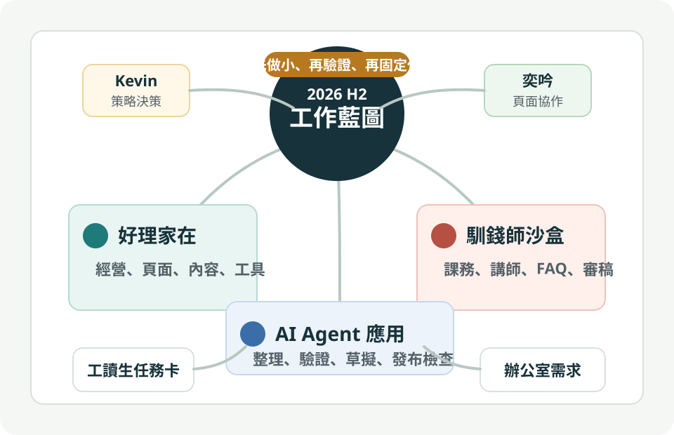

好理家在是主線
頁面呈現、內容擴充、工具入口與成效指標，應該服務同一條對外經營路徑。
公開討論版 v0.1｜2026 年 7 月至 12 月
以好理家在作為對外經營與產品主線，馴錢師沙盒作為課務與知識導入主線， AI agent 作為整理、驗證與工具開發的協作引擎。

核心判斷
下半年不宜同時開太多平行工具。比較穩的做法，是用好理家在牽動需求， 用馴錢師沙盒驗證 AI 導入流程，再把成熟方法沉澱成可重複的 agent 工作法。
頁面呈現、內容擴充、工具入口與成效指標，應該服務同一條對外經營路徑。
馴錢師先從課務文件、講師資料、FAQ 與審稿規則開始，避免一次導入太多場景。
AI agent 負責整理、比對、草擬與驗證；對外發布、正式承諾與敏感資料仍由人決定。
工作主線
以頁面動線、內容入口、測驗工具、文章包與成效回顧串成一條使用者路徑。 奕吟協助呈現頁面與閱讀體驗，Kevin 決定策略與優先順序。
先把課務文件、講師履歷、活動資料與常見問題變成可測試資料集， 再用沙盒產出草稿、摘要與審稿輔助。
建立可重複的工作代理：整理資料、產生提案、檢查公開邊界、驗證頁面與記錄決策。 重點不是炫技，而是讓協作節奏變穩。
半年節奏
整理好理家在頁面問題、沙盒資料類型、工讀生任務卡，完成第一版視覺藍圖。
做出第一個工具入口或內容包，並讓沙盒跑 5 到 10 筆課務文件測試。
回看使用者動線、內容觸發、沙盒準確率與工讀生任務品質，決定是否擴大。
把已驗證的頁面、內容、沙盒流程與 agent 檢查表整理成固定作業節奏。
建立夥伴可接手的 SOP、檢查表、資料欄位與待辦看板，降低只靠 Kevin 判斷的壓力。
整理成果、未完成項目與 2027 年優先順序，決定哪些 agent 或工具值得正式化。
合作配置
決定策略、公開邊界、優先順序與對外承諾。Codex 提供整理與驗證，但不取代最後判斷。
協助好理家在呈現頁面、閱讀體驗、角色動線與頁面文字，適合搭配每週一次頁面 review。
參考人才庫安排短任務：資料整理、內容摘要、頁面 QA、FAQ 初稿與沙盒測試紀錄。
提供真實需求、流程問題、資料來源與服務現場回饋；同仁需求整理來源仍需確認。
負責把零散資料整理成決策稿、頁面草案、檢查表、發布包與驗證紀錄。 所有外部發布、帳號操作、敏感資料使用與正式承諾都保留人工批准。
最小可行起步
Kevin 可以用同一份藍圖和奕吟、工讀生、辦公室夥伴討論工作分工； 同時看得出哪些任務要做、哪些先暫停、哪些需要正式資料來源。
討論待定
公開版保留方向與合作框架；內部版才放人才庫、同仁需求原文、帳號資料與未確認指標。
建議從好理家在頁面調整開始，因為它會同時牽動內容、工具、資料與夥伴協作。
目前先以相近工作清單與會議紀錄推估，正式規劃前需要確認原始資料來源與可引用範圍。
公開邊界